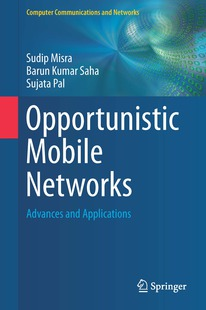

Opportunistic Mobile Networks: Advances and Applications

Opportunistic Mobile Networks: Advances and Applications
is published by
Springer. This book,
#TheOMNBook, if you may say, presents a thoughtful
assimilation of the recent advances in OMNs across
several dimensions, such as routing, cooperation,
heterogeneity, emotions, and more.
It focuses on some of the fundamental challenges in OMNs,
and guides you toward addressing such issues.
#TheOMNBook also reflects on different real-life
aspects and standards, such as Requests For Comments
(RFCs) and patents.
The chapters have been crafted in a way so that both
beginners as well as seasoned
researchers would find them useful.
A dedicated chapter on network simulation is
aimed to help you develop and test protocols with confidence.
Additionally, the book also focuses on a few contextual topics in
closely related domains, wherever relevant.
Our hope herein is that #TheOMNBook would
not only help you gain clear understanding of the key
concepts, but also establish you on a firm ground to further
extend the contemporary state-of-the-art in OMNs.
Purchase eBook
Purchase Hardcover
Salient Features
What makes #TheOMNBook so special?
- Illustrated examples
- Key insights
- Conceptual & numerical problems
- Programming exercises
- Review terms
Key Benefits
In
Opportunistic Mobile Networks: Advances and
Applications, you will learn how to:
- Resolve some of the key challenges in OMNs
- Master protocol development and testing using
the Opportunistic Network Environment (ONE) simulator
- Consider likely influences of different human aspects in OMNs
- Overcome the issues of non-cooperative behavior of nodes
- Address heterogeneity in OMNs and other networks
- Advance the current state-of-the-art in OMNs along different avenues
An excellent resource for both students and researchers interested in mobile opportunistic networking. A well balanced mix of theoretical and practical aspects.
Marco Conti, Institute of Informatics and Telematics (IIT), National Research Council of Italy (CNR), Italy
I've been working on opportunistic networking since a friend was caught up in a disaster zone after a tsunami and couldn't use his smart phone, as the net was down, yet there were many devices around the town which had wireless and could store, carry, and forward messages, but no protocols to implement this useful service. This book covers in clear and up-to-date style, the principles and practice of the main communications mechanisms to date, and offers helpful exercises and useful information on how to implement these systems in practice.
Jon Crowcroft, Fellow of IEEE, Fellow of ACM, Fellow of Royal Society (UK), University of Cambridge, UK
… this book does a good job to bring together several dimensions
of OMNs at a single place.
Prasant Mohapatra, University of California, Davis, USA;
Editor-in-Chief, IEEE Transactions on Mobile Computing (from the Foreword)
#TheOMNBook consists of 10 chapters, and is co-authored by
Sudip Misra and Sujata Pal. An overview of the chapters is as follows.
- Origins and Characteristics
- The “traditional” model of networks that we are familiar with fails to work when certain fundamental assumptions, such as availability of end-to-end communications paths and short round trip times, do not hold true. Delay Tolerant Networks (DTNs) were proposed to enable communication in such scenarios by leveraging the store-carry-and-forward mechanism of message transfer. In this Chapter, we look at the origins of DTNs, their characteristics, and different variations, such as Opportunistic Mobile Networks (OMNs). This Chapter also presents a short review of some of the popular research areas in DTNs/OMNs. The Chapter concludes with a brief overview of network simulations. Many of these topics would be discussed at a greater depth in the remainder of the book.
- Delay Tolerant Routing and Applications
- The fundamental goal of any communication network is to have the messages delivered to their corresponding destinations. In conventional networks, such as MANETs, determining a routing path with optimum cost is rather easy. However, such approaches become difficult in DTNs/OMNs due to their unique characteristics, as noted in the previous Chapter. The network topology of DTNs/OMNs is not only highly dynamic, but also exhibits high degree of network partitioning. In particular, the concept of end-to-end communication paths practically ceases therein. To overcome such issues and constraints, several schemes have been proposed in the literature to achieve efficient routing in DTNs/OMNs. In this Chapter, we take a look at a broad category of such protocols. A common characteristic of all these routing protocols is that they are replication-based, i.e., they create multiple copies of a message in the OMN concerned. However, some of them attempt to restrict the extent of replication in different ways to achieve efficiency. We, then, present a set of commonly used metrics for measuring the performance of OMNs. Subsequently, we discuss about real-life traces that are increasingly being used with network simulations nowadays. Finally, we conclude this Chapter by retrospecting some of the applications of DTNs.
- A Developer's Guide to the ONE Simulator
- In this Chapter, we look at how to work with the Opportunistic Network Environment (ONE) simulator using the NetBeans integrated development environment (IDE). Use of such an IDE often makes workflow easier. Next, we discuss in details a key topic — creating a new routing protocol using the ONE simulator. We illustrate this process with a simple example by considering a variation of the SnW protocol. A walkthrough of the code, together with insights, are provided. In real life, developing software is usually a complex process. In such scenarios, tracking back the code and debugging becomes easier using the graphical user interface (GUI)-based IDEs. In this regard, we take a look at version control of source code using Git. Git operations can be performed from a terminal or from within NetBeans — we illustrate both approaches here. Later in this Chapter, we cover the issue of testing a protocol developed with the ONE simulator. We discuss how to write a test case from scratch by using JUnit and the framework provided by the ONE simulator. Finally, we conclude this Chapter with a set of best practices based on our experiences with the ONE simulator.
- Emerging Sensing Paradigms and Intelligence in Networks
- Apart from DTNs and OMNs, in the recent past, the field of Wireless Sensor Networks (WSNs) has also made interesting progress giving rise to different paradigms, such as human-centric sensing. Whether we talk about OMNs of participatory sensing, some aspects are common to them — human users, their mobility and actions. Today, smartphones come equipped with various types of sensors and applications, which are enabling users to take part in large-scale urban sensing missions. In this Chapter, we take a look at such emerging areas of WSNs along with mission aspects in WSNs. Subsequently, we look at some of the popular applications of WSNs in the modern world. This is followed by a review on mobility models and communication aspects pertaining to pre- and post-disaster scenarios. Subsequently, we discuss about the applications of agent-based systems in such scenarios. The latter portion of this Chapter deals with the notion of intelligence with specific focus on situation awareness. Next, we formally define a MOON with a set of different parameters. Finally, we conclude this Chapter by studying the effects that intuitive intelligence-based decision making on the mission prospects in MOONs.
- Aspects of Human Emotions and Networks
- One of the fundamental aspects that characterizes human beings is emotion, which has bidirectional interaction with its surrounding environment. Research on emotions have crossed the domain of psychology and has witnessed increasing cross-disciplinary approaches, where the fields of artificial intelligence (AI), physiology, software engineering, behavioral science, online social networks, and others get intertwined. Motivated by its importance, in this Chapter, we look at some of the popular models — both conceptual and computational — of human emotions proposed in the field of psychology. Subsequently, we discuss about different techniques of emotion detection, such as using smartphones and online social networks, and how human beings emotionally react to different scenarios. We conclude this Chapter, with a study on an aspect of human-network interplay in MOONs, by considering the effects of human emotions on the network performance.
- Evolutionary Game in Wireless Networks
- Game theory has been widely used in wireless networks for solving problems of conflict and cooperation among rational agents. A particularly interesting branch of game theory is Evolutionary Game Theory (EGT), where population evolves over time. In EGT, the players circumspectly adapt the most successful strategies over time. This adaptation is done by replicator dynamics. In the first part of this Chapter, we take a quick tour of the fundamental concepts in classical and evolutionary game theory. Followed by this, we look at diverse applications of EGT with a focus on communication networks. Subsequently, we discuss about a particularly popular game based, called the Rock-Scissors-Paper (RSP) game. This Chapter concludes with an application of the RSP game to OMNs by considering the relationship that exists among different cooperation strategies of the nodes.
- Enforcing Cooperation in OMNs
- Nodes in OMNs usually suffer from lack of end-to-end communication paths, which results them to depend upon the other intermediate nodes for forwarding their messages. Therefore, the intermediate nodes play the crucial role of cooperation in OMNs. In this Chapter, we take a close look at different types of cooperation enforcement schemes proposed for OMNs. These include credit- and reputation-based mechanisms and game theoretic approaches among others. the latter portion of this Chapter presents a detailed discussion on the design of a distributed scheme for promoting cooperation in OMNs. The proposed scheme, DISCUSS, is inspired by evolutionary theory. We look at different theoretical aspects as well as the feasibility of its use in real life.
- Heterogeneity in OMNs
- Heterogeneity in real-life networks is perhaps inevitable. In this Chapter, we look at different aspects of heterogeneity in conventional networks, such as MANETs, as well as, in OMNs. We begin by looking at the fundamental causes of heterogeneity in communication networks, which includes diversity in software, hardware, and architecture. We look at the different forms of heterogeneity that arises in the link and network layers of the protocol stack. We also look at different techniques to mitigate such issues. Subsequently, we focus on specific aspects of heterogeneity that are observed in DTNs/OMNs. We look at time-varying graphs, and representation of heterogeneous OMNs with such graphs. Followed by this, we study the aspects of heterogeneous routing protocols in OMNs, and their mitigation. Finally, we summarize the adverse effects that heterogeneity has upon the performance of OMNs.
- Opportunistic Mobile Networks: Toward Reality
- Having explored different dimensions of OMNs, in this Chapter, we pause for a moment, and look at the reality. Where do DTNs/OMNs stand today? How well it has been adopted? What are its promises? We begin by taking a look at some comprehensive statistics on research efforts in this domain. Subsequently, we discuss about Request for Comments (RFCs) and look at some of the RFCs published for DTNs. This is followed by a quick tour of a sample of current inventions based on DTNs/OMNs. In the latter part of this Chapter, we discuss some of the recent trends in OMNs and different avenues along which it can evolve. Finally, this Chapter ends with a few prospective project topics that can be undertaken by the reader.
- The Big Picture
- This book presented a short tour of OMNs. It looked back at its origins in DTNs, its characteristics, advances made over the last two decades, and various applications. In this book, we looked at the aspects of routing in OMNs, issues of cooperation and heterogeneity, and a different dimension — aspects of human users in the network. In this final Chapter of the book, we put our learning in perspective, and look at the big picture emerging out of all these discussions.